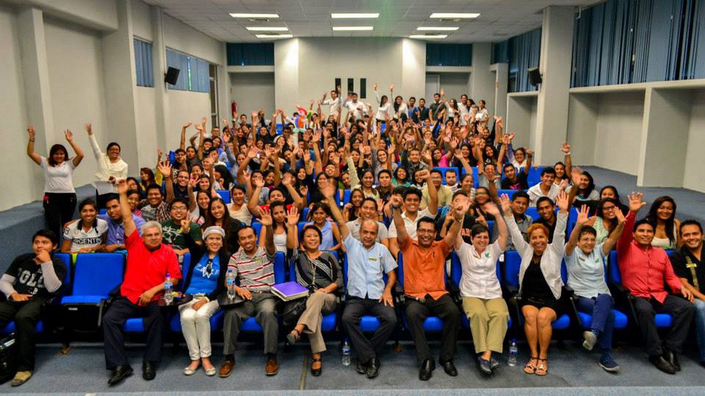
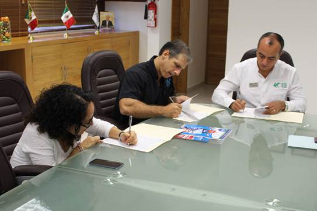

Compentencias
Adminstrar los recursos de las organizaciones, mediante la aplicacion de metodologias
y herramientas tecnologicas de planeacion estrategica, financieras, mercadotecnia y gestion
de calidad. Administrar el capital humano, mediante los procesos de planeacion, reclutamiento,
seleccion, desarrollo y evaluacion del factor humano.

Inicio de T.S.U.
Primer cuatrimestre:
-Matematicas.
-Informatica.
-Administracion de organizaciones.
-Mercadotecnia.
-Contabilidad basica.
-Ingles I.
-Expresion oral & escrita.
-Formacion sociocultural I.
Segundo cuatrimestre:
-Matematicas financieras.
-Estadistica aplicada a la administracion.
-Modelos de desarrollo organizacional.
-Metodologia de la investigacion.
-Contabilidad intermedia.
-Fundamentos de economia.
-Diseño de procesos y gestion de calidad.
-Formacion sociocultural II.
-Ingles II.
Tercer cuatrimestre:
-Planeacion estrategica.
-Talento emprendedor.
-Analisis e interpretacion de estados financieros.
-Planeacion financiera.
-Desarrollo sustentable.
-Legislacion organizacional.
-Integradora I.
-Formacion sociocultural III.
-Ingles III.
Cuarto cuatrimestre:
-Comportamiento organizacional I.
-Sueldos & Salarios I.
-Integracion de capital humano.
-Diseño & valuacion de puestos.
-Legislacion laboral.
-Formacion sociocultural VI.
-Ingles IV.
Quinto cuatrimestre:
-Comportamiento organizacional II
-Sueldos & Salarios II.
-Desarrollo de capital humano.
-Evaluacion de desempeño.
-Higiene & seguridad laboral.
-Integradora II
-Expresion oral & escrita II.
-Ingles V.
Sexto cuatrimestre:
-Estadia en el sector productivo.
Ocupaciones profesionales:
El tecnico superior Universitario en administracion area capital humano podra desempeñarse como:
-Coordinador de reclutamiento y seccion.
-Coordinador de capacitacion y adiestramiento.
-Analista de nominas.
-Consultor de organizaciones en area capital humano.
-Coordinador de areas de capital humano.
-Analista de gestion de la calidad.
-Diseñador de puestos de trabajo.

Inicio de ingenieria.
Septimo cuatrimestre:
-Estadistica para negocios.
-Economia para los negocios.
-Gestion de compras
-Derecho corporativo.
-Ingles VI
-Administracion del tiempo.
Octavo cuatrimestre:
-Administracion financiera.
-Estrategias para nuevos negocios.
-Dirreccion de capital humano I.
-Optativa I(mercadotecnia turistica).
-Ingles VII.
-Planeacion & organizacion del trabajo.
Noveno cuatrimestre:
-Tecnicas para la innovacion.
-Sistemas de control administrativo.
-Estrategias corporativas de ventas.
-Integradora I.
-Optativa II (Comercio exterior).
-Ingles VIII
-Dirreccion de equipos de alto rendimiento.
Decimo cuatrimestre:
-Ingenieria financiera.
-Desarrollo empresarial.
-Dirreccion de capital humano II.
-Reingenieria organizacional.
-Integradora II.
-Ingles IX
-Negociacion empresarial.
Undecimo cuatrimestre:
-Estadia en el sector productivo